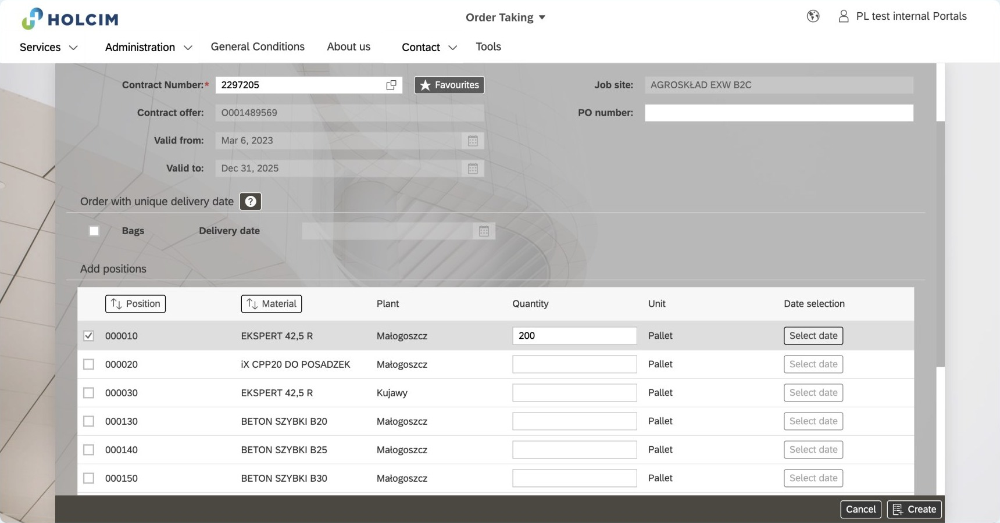
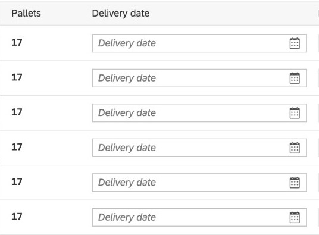
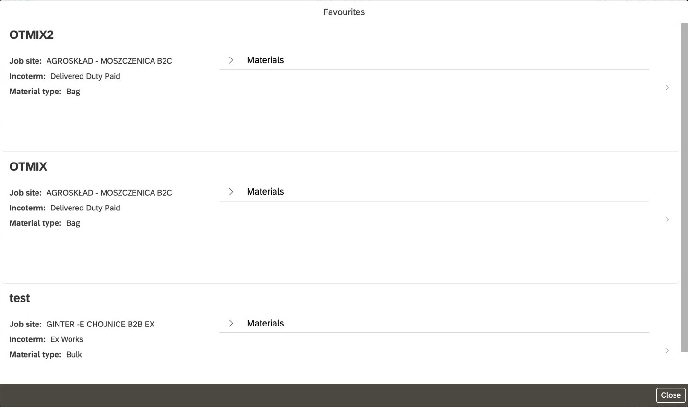
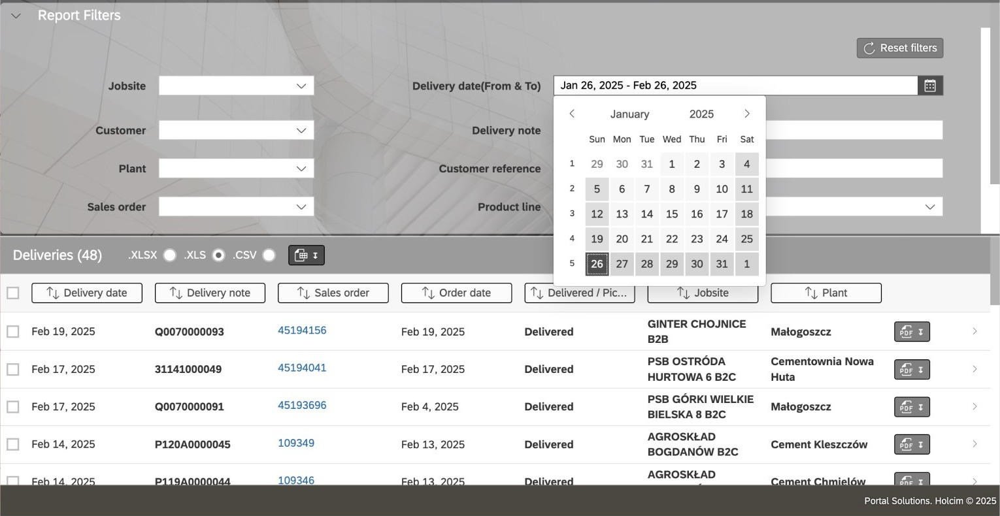
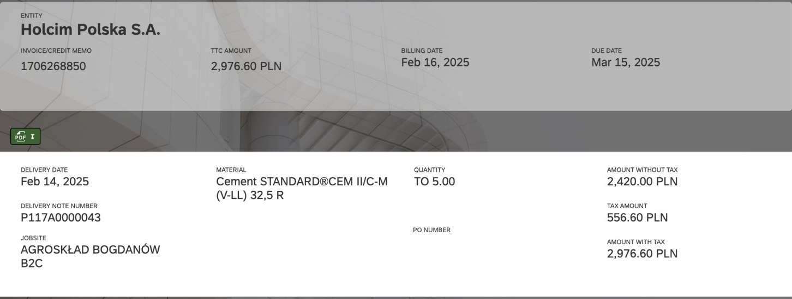

Portfolio review · RevenueCat
Simplifying orders for Holcim’s customers
Daniel Sáez · Product designer
Hanzo for Holcim · 2024

SayThis is a B2B ordering portal I redesigned at Hanzo for Holcim, one of the biggest building-materials companies in the world. About 15 minutes.
The problem
SayLet me start with the problem.
The problem
Customers refused to use the portal
SayHolcim sells cement and concrete in 70 countries. Its customers are businesses ordering materials for their job sites. They had a customer portal, and they refused to use it. They kept ordering by phone and email.
Why it mattered
Why they refused it
1Hard-to-use portal
→
2Customers get stuckFrustrated, can’t finish, or get it wrong
→
3They refuse to use itAnd order by phone or email
→
4Manual work for Holcim
Business goalMore orders through the portal
SayIt was a chain. The portal was hard to use, so customers got stuck: frustrated, unable to finish an order, or finishing it wrong. At that point they gave up on the portal and picked up the phone. And every one of those orders was manual work for Holcim. The goal was adoption, and the only lever design had was the first link: the portal itself.
Scope
I redesigned the whole portal.
Today: orders.
Today’s focusOrders
Deliveries
Invoices
Pallet returns
Dashboard
…
SayI owned UX end to end on a small team: a visual designer on the design system, a front-end developer, and a PM at Holcim. I redesigned the whole portal, but today I'll focus on orders, because that's where adoption was won or lost.
The root cause
It was built around Holcim, not its customers
One principle for the whole redesign: stop making customers understand how Holcim is organised.
SayI couldn't talk to customers, so I worked with stakeholders, used customer support as a proxy, reviewed the current UI and mapped the whole system with OOUX. The pattern was clear: the portal mirrored Holcim's internal structure, its sections and its vocabulary. Nothing flashy here. It was a full redesign of a product in bad shape, and that one principle guided every decision. Let me show you how it played out in the two things customers do with orders: placing them and following them.
Placing an order
SayLet’s start where every order starts: placing it.
BeforeAsked for a contract number first

After
Start from the job site
SayHolcim manages orders by contract, so the old form asked for a contract number first. Customers can have several and rarely have the number at hand. What they do know is where the material has to go: the job site. So that’s where ordering starts now.
BeforeOne long form that changed with every choice
After
One step at a time, in a logical order
SaySplitting a form into steps isn’t always right. Here it was, for two reasons. Every choice reshaped what came next: the job site set delivery or pickup, materials came in different units, and ready-mix needed extra details. And the steps follow the order customers naturally think in: where, what, when. These are the two flows.
BeforeDeliveries hidden in a modal per material, split into pallet lines

After
Plan deliveries, not pallets
SayFor a customer, the most important part of an order is when it arrives at the site. In the old portal that was hidden: a “Select date” button per material, opening a modal where the quantity was split into pallet lines, each needing a date and a time window. That’s how Holcim splits product. Customers plan around something else: trucks arriving. So delivery planning became its own step, with every material on one screen. Each row is a numbered delivery, sized in trucks, or tonnes for bulk. The first one is prefilled, and “Apply to all deliveries” copies it to the rest. And because deliveries are numbered, they’re the same deliveries customers follow later.
BeforeMistakes surfaced after the order was sent
After
Check it before it’s sent
SayA summary with inline editing, so mistakes are caught before Holcim sees the order, not in a phone call afterwards.
BeforeReorder hid behind “Favourites”, inside the order form

After
Repeat it from the order itself
SayAnd the fastest order should be a repeat one. Reorder existed, but as “Favourites”: a template list opened from inside the new-order form, and most customers never found it. Now “Repeat order” sits on every order and in the list, and jumps straight to scheduling deliveries.
Following an order
SayOnce an order is placed, customers need to follow it.
BeforeCement & Aggregates and Ready-mix lived in separate sections
After
One place for every order
SayCement and aggregates and ready-mix are separate business lines inside Holcim, so they were separate sections in the portal. Customers just have orders. Now there’s one Orders section, with the order types as tabs.
BeforeSearch needed record numbers

After
Search the way customers ask
SaySearch used to need record numbers: sales order, delivery note, customer reference. Now there’s one search for order number, job site or date, and filters like “Last 7 days”.
BeforeInvoices didn’t link back to their order or delivery

After
Every order connected
SayFor Holcim, orders, deliveries and invoices are separate records. For a customer they’re one story. Now they link to each other, both ways.
BeforeNo overview of how much had been delivered
After
See where an order is
SayAnd each material shows how much has been delivered, so customers can see where an order is without opening every delivery.
Looking back
SaySo, did it work, and what would I change?
After launch
I don’t have the adoption number. Here’s how I’d prove it.
The one metricShare of orders placed in the portal
SayI don't have results to show yet. If I were judging this, that's the number I'd watch, alongside fewer corrected orders and fewer support calls. Not having it is exactly why, next time, I'd agree on the metric before designing. CheckReplace with real proof if you get any before the review.
Looking back
What I’d do differently
01Talk to real customers, even briefly
02Agree on the success metric before designing
SayTwo things. Support was a good proxy, but even a few customer calls would have validated the problems first-hand. And I'd agree on the success metric with Holcim before designing, so the launch could be measured.
Thank you
Questions?
Daniel Sáez · dst.post@gmail.com · danielszt.github.io
SayHappy to go deeper into any decision, the OOUX work, or how I worked with the developer.